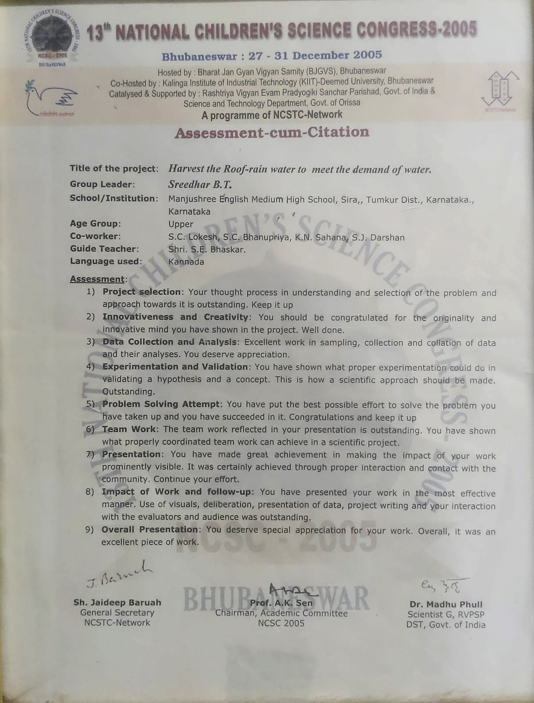
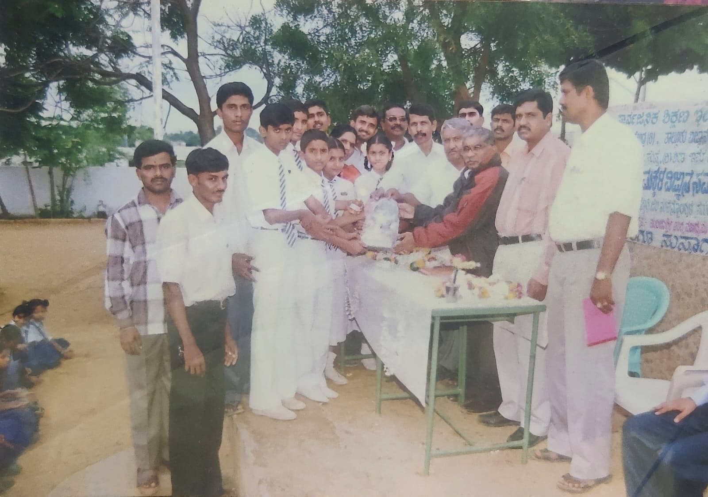
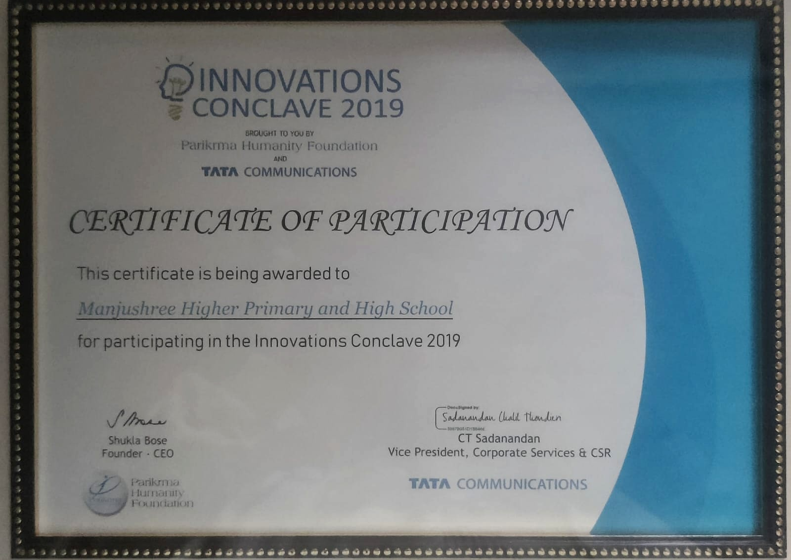
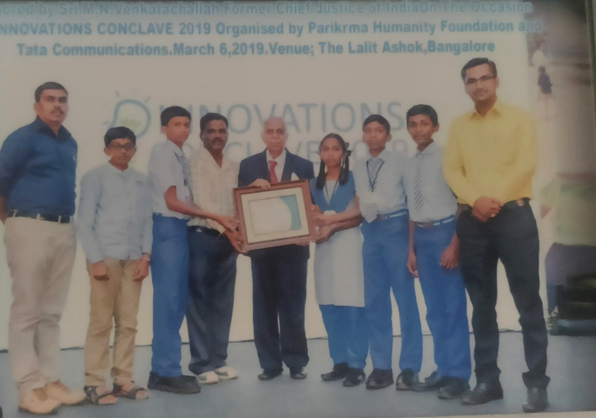
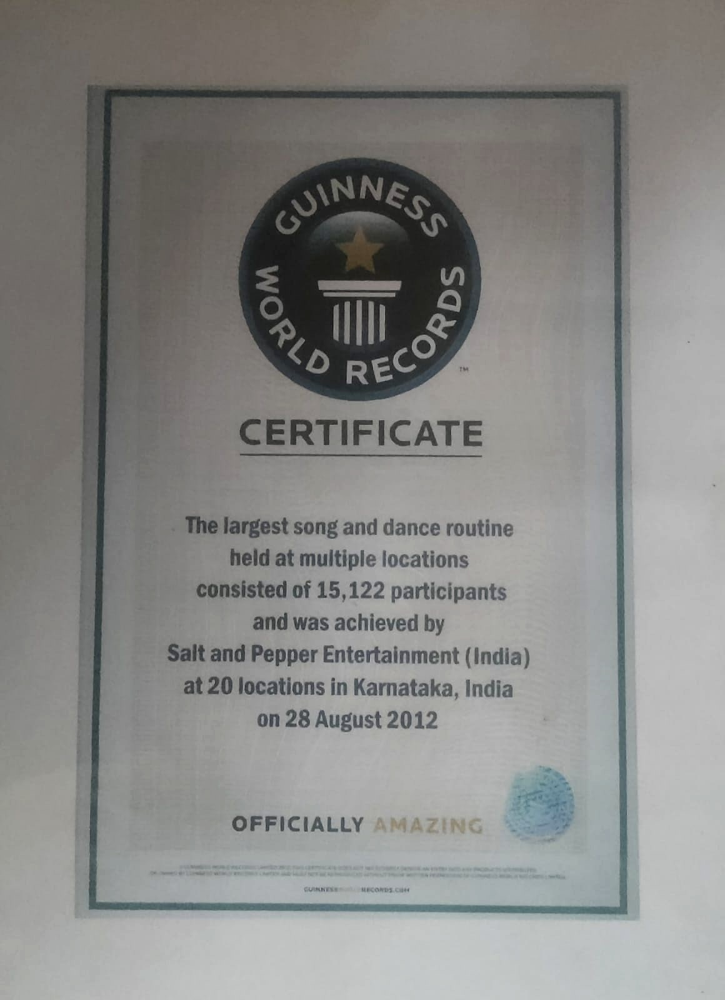
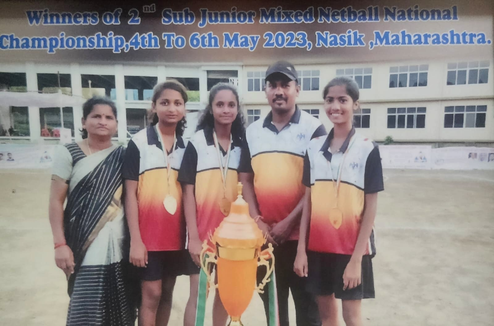

The everyday achievements of our students — in classrooms, on the field, and in the small competitions that shape confidence.
"Harvest the Roof-rain Water to Meet the Demand of Water"
Our students represented Manjushree English Medium High School, Sira on a national stage — presenting a rainwater harvesting project judged outstanding across every assessment category: project selection, innovativeness, data collection, experimentation, problem-solving, teamwork, presentation and impact.




Recognising young innovators and problem-solvers
Our students represented Manjushree at a state-level innovations gathering in Bangalore, receiving their certificate from a former Chief Justice of India — a proud moment for the school and the town of Sira.
"The largest song and dance routine held at multiple locations"
Manjushree students were part of the Karnataka-wide Guinness World Record for the largest song-and-dance routine held simultaneously at 20 locations — a joyful piece of history that our children helped create.


Karnataka's champions on a national stage
Our girls travelled to Nasik and brought home the national trophy — a proud moment for the school, the town of Sira and every teacher and coach who put in the hours on the practice court.
We celebrate more than just marks — we celebrate the effort, the improvement and the courage to try.
Class-wise toppers and SSLC results published each year. Steady, honest work by students and teachers alike.
Participation in elocution, essay writing, quiz, drawing and cultural competitions at school and taluk level.
Athletics, kabaddi, kho-kho and other team games — with regular inter-house and inter-school participation.
Annual day performances, cultural programmes and craft exhibitions showcasing student talent.
Simple science models and projects that turn textbook concepts into hands-on learning.
Attendance, discipline, punctuality and helpfulness — the everyday achievements that matter most.
A trusted neighbourhood school since 1994-95.
A steady stream of Class 10 students moving on to further studies.
Every child, every day — that is what we work towards.
Names and details of our top performers, competition winners and other honourees will be added here. If your child or family member has a Manjushree achievement to share, please write to the school office.
SSLC school toppers, year-wise class toppers and subject-wise high scorers.
Elocution, essay, quiz, drawing and cultural event winners at school, cluster and taluk level.
Athletics, kabaddi, kho-kho and other individual and team achievements.
We celebrate effort as much as we celebrate results. Come and see how we work with our students.
Visit the School →